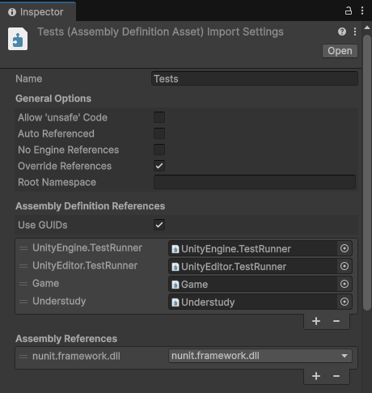
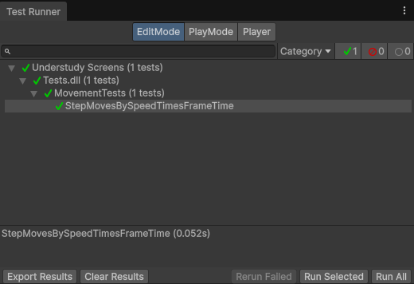
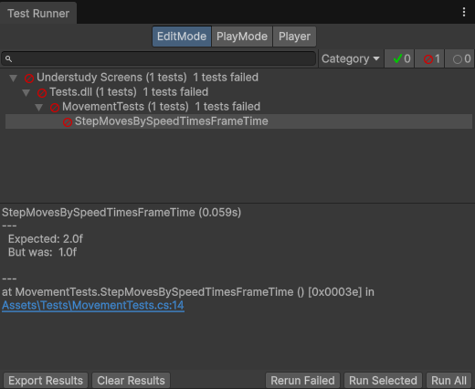

Write your first test
Before you start
A unit test is a method that runs one piece of code and checks the result. The Unity Test Framework runs tests from the Test Runner window, either in Edit mode, without entering Play mode, or in Play mode, with frames running. This tutorial writes Edit mode tests.
Game code is hard to test this way, because it reads values that change on every run: the frame time, random
numbers, saved data. A test can't expect a fixed result from code that reads Time.deltaTime. Understudy
lets the test decide what Time.deltaTime returns, and leaves the code under test as it is.
Follow the sections in order: each one builds on the previous one.
Create the code to test
The method to test computes how far an object moves in one frame, at a given speed. In the Project window, create a
folder named Assets/Scripts, and in it a C# script named Movement. Open it, and replace its
contents with the following code:
using UnityEngine;
public static class Movement
{
public static float Step(float speed)
{
return speed * Time.deltaTime;
}
}A test of Step can't choose Time.deltaTime: it is whatever the last frame took, so the
result is never the same twice.
Create the assemblies
The Test Framework runs tests from a test assembly, and a test assembly can only reach code that is in an assembly definition of its own. This step is the same with or without Understudy.
To put your scripts in an assembly, perform the following steps:
- In the Project window, select the
Assets/Scriptsfolder. - Go to Assets > Create > Scripting > Assembly Definition,
and name it
Game.
Every script in Assets/Scripts and its subfolders now compiles into Game. If the Console window
then shows errors about missing types, your scripts use a package or another assembly definition, such as
Unity.TextMeshPro. Select Game, add what is missing to Assembly Definition
References in the Inspector, then select Apply.
To create the test assembly, perform the following steps:
- Go to Window > General > Test Runner, and select EditMode.
- In the Project window, select the
Assetsfolder. - In the Test Runner window, select Create a new Test Assembly Folder in the active path. Unity creates
Assets/Tests, with an assembly definition namedTests. - Select the
Testsassembly definition. In the Inspector, under Assembly Definition References, select + twice, set the two new entries toGameandUnderstudy, then select Apply.

If the Test Runner window shows no button, its EditMode tab already lists tests, or the selected folder already holds a test assembly. For the other ways to create a test assembly, refer to Set up a test assembly.
Write the test
In Assets/Tests, create a C# script named MovementTests, and replace its contents with the
following code:
using NUnit.Framework;
using Understudy;
using UnityEngine;
public class MovementTests
{
[Test]
public void StepMovesBySpeedTimesFrameTime()
{
Stub.Property(() => Time.deltaTime).Returns(0.5f);
float distance = Movement.Step(2f);
Assert.That(distance, Is.EqualTo(1f));
}
}Each line does one thing:
[Test]marks the method as a test.Stub.Property(() => Time.deltaTime).Returns(0.5f)makes every read ofTime.deltaTimein the code under test return 0.5 for the rest of this test. The lambda,() => Time.deltaTime, names the member as the code under test reads it, andPropertysays which kind of member it is.Movement.Step(2f)runs the code under test.Assert.Thatchecks the result: a speed of 2 for half a second covers a distance of 1.
The stub applies to the code under test only: a read of Time.deltaTime written in the test itself gets the real
value. When the test ends, the stub ends with it, and the next test sees the real Time.deltaTime again.
Run the test
In the Test Runner window, select Run All. The test shows a green check mark when it passes.

To see a failure, change Is.EqualTo(1f) to Is.EqualTo(2f) and run the test again: the Test
Runner window shows the expected and actual values. Change it back afterward.

Read a leak warning
Delete the Stub.Property line and run the test again. The test fails, and the Console window shows a warning:
Leak in MovementTests.StepMovesBySpeedTimesFrameTime: Time.deltaTime ran for real at Movement.cs:7. Stub it, or declare it real with Real.The real frame time isn't 0.5, so the distance is wrong, and the warning tells you why. Understudy warns when a test
reaches a value that changes between runs, such as the frame time or a random number, without stubbing it. Such a test
can pass on your machine and fail on another. Put the Stub.Property line back to fix it.
Real, the other fix the warning names, is for a test that uses the real member on purpose.
Check what the code under test did
A stub also records what the code under test does with the member. In Assets/Scripts, create a script named
HighScore, which saves a score only when it beats the best one saved:
using UnityEngine;
public static class HighScore
{
public static void Submit(int score)
{
if (score > PlayerPrefs.GetInt("best"))
PlayerPrefs.SetInt("best", score);
}
}In Assets/Tests, create a script named HighScoreTests, and replace its contents with the
following code:
using NUnit.Framework;
using Understudy;
using UnityEngine;
public class HighScoreTests
{
[Test]
public void SavesANewBestScore()
{
Stub.Method(() => PlayerPrefs.GetInt("best")).Returns(10);
StubbedMethod saved = Stub.Method(() => PlayerPrefs.SetInt("best", Arg.Any<int>()));
HighScore.Submit(25);
Assert.That(saved.Calls, Has.Count.EqualTo(1));
Assert.That(saved.Calls[0].Arguments[1], Is.EqualTo(25));
}
[Test]
public void KeepsAHigherBestScore()
{
Stub.Method(() => PlayerPrefs.GetInt("best")).Returns(10);
StubbedMethod saved = Stub.Method(() => PlayerPrefs.SetInt("best", Arg.Any<int>()));
HighScore.Submit(5);
Assert.That(saved.Calls, Is.Empty);
}
}- The stub on
GetIntsets the best score the test starts from. - The stub on
SetIntreplaces the save, so the test never writes to your realPlayerPrefs, and records each call the code under test makes.Arg.Any<int>()matches any score; to match one value only, write the value instead. saved.Callslists the recorded calls, andArgumentsholds the arguments of each one, in order:Arguments[1]is the second argument ofSetInt, the score.
To record calls and still let the real member run, use a spy, Spy.Method, instead of a stub. For more
information, refer to Check what the code under test did.